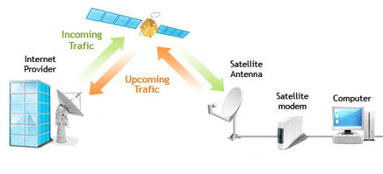
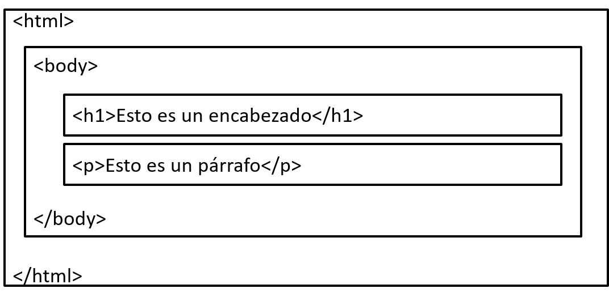
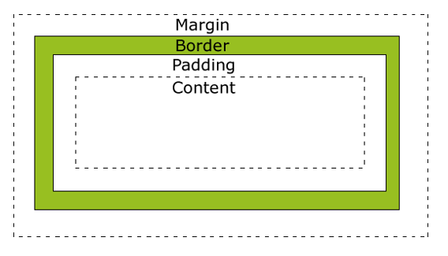

Información acerca de HTML:
Web:
Es un documento o información electrónica capaz de contener texto, sonido, vídeo, programas, enlaces, imágenes y muchas otras cosas, adaptada para la llamada World Wide Web (WWW) y que puede ser accedida mediante un navegador web. Esta información se encuentra generalmente en formato HTML o XHTML, y puede proporcionar acceso a otras páginas web mediante enlaces de hipertexto. Frecuentemente también incluyen otros recursos como pueden ser hojas de estilo en cascada, guiones (scripts), imágenes digitales, entre otros.
Funcionamiento de Internet:
Su conexión comienza en un satélite mandando una señal hacia una compañia por ejemplo "Telmex", a través de esa señal se dirige a un servidor encargando de dar un servicio a un proveedor. Esta señal es adquirida para todas las personas ya que exiten comunicaciones con personas en otros países por medio de una aplicación ya que el internet manda información hacia un satélite para enviarlas hacia una compañia y esta a un proveedor, y todo esto funciona mediante energía.

HTML Y HTML5:
¿Qué significa?
Hyper-Text-Markup-Language
HTML es el lenguaje original de la Web. La última versión completada (4.01) se formalizó a fines de 1999.
HTML ‘tags’ (etiquetas):
El código en HTML está formado por un conjunto de etiquetas (tags).
El navegador interpreta estas etiquetas al momento de cargar la página.
Forma de las etiquetas HTML:
Símbolos <>
Estructura básica:
NombreDeEtiqueta
Nombre de las etiquetas
Tenemos una amplia gama de etiquetas en HTML5, cada una tiene su propio significado.
El nombre puede ser escrito en mayúsculas o en minúsculas.
Pares de etiquetas:
La mayoría de las etiquetas vienen en pares, es decir:
- Etiqueta Apertura = Inicio
- Etiqueta Cierre = Final (contienen una diagonal /)
Etiquetas Individuales:
Tenemos algunas otras etiquetas que no vienen en pares, es decir, solo tiene etiqueta de apertura por ejemplo:
Elementos HTML:
Todos los elementos HTML se pueden dividir en dos tipos básicos:
- Elementos en bloque
- Elementos en línea
Los elementos pueden anidarse, es decir, podemos tener elementos HTML dentro de otro(s) elementos.

Espacios en HTML:
Los saltos de línea se ignoran.
Varios espacios en blanco consecutivos se convierten en uno solo
Atributos estándar en HTML:
- tstyle. Especifica las propiedades CSS de un elementoe
- id. Especifica un identificador único para un elemento
Estructura Básica de un documento HTML:

El elemento head:
Contiene información sobre el documento HTML, incluyendo palabras clave, enlaces a otros documentos que usa como archivos CSS y JavaScript
A excepción del elemento title que se muestra en la barra de título del navegador, ningún elemento dentro de head se muestra en el contenido de la página HTML
Elementos de head:
- Title
- Meta
- Link
- Script
- Style
- title:
Permite agregar un título a un
documento HTML, se muestran en la barra de título de los navegadores y se usa como valor por default cuando se marca una página como favorita
- link:
define las relaciones entre dos documentos. Su uso más frecuente es para referirse a las hojas de estilo que usa el documento
- meta:
Este elemento contiene información sobre tu página.
El término meta se refiere a metadatos, datos de los datos. Su uso más común es para describir información sobre la descripción y palabras clave del documento, y el tipo de codificación.
- script:
Permite integrar lenguajes de scripting en un documento HTML.
Atributos:
- type:
Describe el tipo MIME del script que se va a incluir.
- src:
La URL del documento que contiene el script
El elemento body
Todo el contenido de un documento HTML se encuentra en el elemento body.
El elemento body va después del elemento head y debe cerrarse antes de la etiqueta de cierre del elemento html
Estructura Semántica
La semántica es el estudio del significado del lenguaje, el término también es usado para referirse al significado de un elemento o atributo HTML
Elementos de body
el body estará todo nuestro contenido. HTML5 nos provee una gran variedad de etiquetas para poder darle semántica al contenido.
Ejemplos
- p
Sirve para delimitar párrafos. (Paragraph)
- h1.....h6
Sirven como títulos y separan las diferentes secciones de contenido de un documento. (Heading)
- pre
El elemento pre define un bloque pre formateado donde el texto se muestra tal cual está en el código fuente. (Preformatted)
- hr
Crea una línea horizontal que sirve para dividir secciones de texto. (Horizontal Rule)
- em
Se usa para agregar énfasis a una palabra o frase.(Emphasis)
- a
Define un enlace (link), utilizando el atributo “href” donde se colocará el enlace. (Anchor)
Elementos de body - Listas
- ul
Define una lista no ordenada. (Unordered List)
- ol
Define una lista ordenada. (Ordered List)
- li
Es el elemento de una lista (Sea ordenada o no ordenada).(List Item)
- dl
Define una lista de definiciones. (Description List)
- dd
Contiene la descripción del elemento que está en la etiqueta “dt”. (Definition Description)
Elementos de body - Tablas
- table
Elemento para crear una tabla. (Table)
- thead
Encabezado de la tabla. (Table Head)
- tbody
Cuerpo de la tabla. (Table Body)
- tfoof
Pie de la tabla. (Table Foot)
- tr
Define una “fila” de la tabla. (Table Row)
- th
Define un encabezado en la tabla. (Table header)
- td
Define un dato (celda) dentro de la tabla. (Table Data)
Modelo de espacio en los elementos de HTML

Resultados:


 5
5